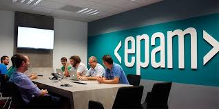

Новости и статьи:
ЕРАМ признана лидером консалтинга в области компьютерного зрения согласно отчету Forrester

ПРЕСС-РЕЛИЗ: 23 ноября, 2020Минск, Беларусь – 23 ноября, 2020 г.
Компания EPAM Systems, Inc. (NYSE: EPAM), ведущий мировой поставщик услуг по разработке цифровых платформ и программного обеспечения, названа лидером консалтинга в области компьютерного зрения (CV) в отчете The Forrester New Wave™: Computer Vision Consultancies, Q4 2020 ведущей независимой исследовательской компании Forrester. Благодаря своему опыту предоставления высококлассных инновационных CV-решений широкого спектра ЕРАМ заняла одну из трех лидирующих позиций среди 12 других поставщиков услуг.
По данным отчета, «даже технологические гиганты, имея штатных специалистов по компьютерному зрению, обращаются к EPAM за помощью в создании прогрессивных CV-решений. Компания имеет большую экспертизу в разработке подобных продуктов как для обыденных операций (например, учет материальных активов и обработка счет-фактур), так и для узконаправленных (например, приложение с дополненной реальностью и поддержкой машинного зрения для технического обслуживания в эксплуатации)».
Согласно Forrester, EPAM «должна быть первой в списке возможных поставщиков услуг у компаний, желающих получить передовое решение, которое действительно будет работать». Клиенты, опрошенные при подготовке отчета, высоко оценили умение EPAM слаженно работать с междисциплинарными проектами и создавать уникальные CV-решения на высоком техническом уровне.
«ЕРАМ отличается от других компаний-консультантов в области компьютерного зрения своей многопрофильной экспертизой. В нашей команде работает множество профессионалов: от исследователей глубинного обучения (deep learning) и специалистов в Big Data до Embedded-инженеров и экспертов по оборудованию для обработки визуальной информации (imaging hardware), — комментирует Михаил Толмачев, руководитель практики компьютерного зрения в EPAM. — Мы создаем успешные, прорывные продукты, которые непрерывно улучшают деятельность бизнеса клиентов, и, вероятно, поэтому Forrester признала ЕРАМ лидером в исследовании New Wave».
По результатам исследования, анализа данных и выставленных баллов — основанных на опросе, который проводился по 10 критериям, в рамках двухчасового брифинга с каждым участником — Forrester определила 13 наиболее выдающихся поставщиков услуг в области компьютерного зрения в категориях Leaders (Лидеры), Strong Performers, Contenders и Challengers.
Чтобы узнать больше о ЕРАМ, посетите www.epam.com.
Мобильное приложение HealthBuddy COVID-19 теперь доступно в магазинах приложений Apple и Google Play
НЬЮТАУН, Пенсильвания, 29 октября 2020 года.
ЧТО: Приложение ЮНИСЕФ и EPAM ‘HealthBuddy COVID-19’, разработанное Региональным отделением Детского фонда ООН по странам Европы и Центральной Азии (ЮНИСЕФ РЕЦА) в качестве надежного источника информации и рекомендаций по вопросам COVID-19, теперь можно скачать в магазинах приложений App Store и Google Play.
Приложение будет доступно во всех странах Европы на английском и русском языках.
ПОЧЕМУ: Пандемия COVID-19 продолжает оказывать негативное влияние на жизнь людей, поэтому доступ к актуальным и достоверным фактам остается критически важным для оперативного информирования о чрезвычайных ситуациях и стимулирования обеспечивающего защиту и профилактику поведения на уровне местных сообществ и на индивидуальном уровне.
ДЛЯ КОГО: Для государственных органов власти, учреждений общественного здравоохранения, агентств по оказанию социальных услуг, семей и отдельных лиц.
КОГДА: Четверг, 29 октября 2020 года
ГДЕ: Магазины приложений Apple and Google Play